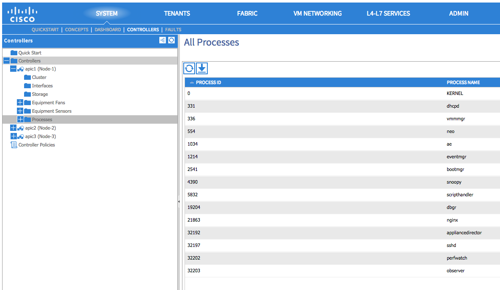
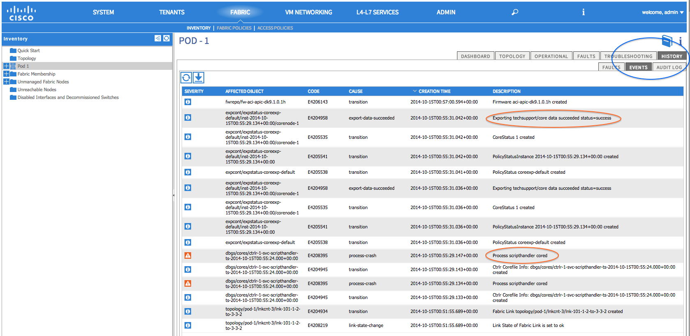
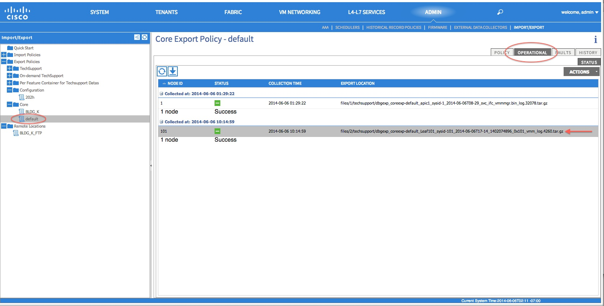
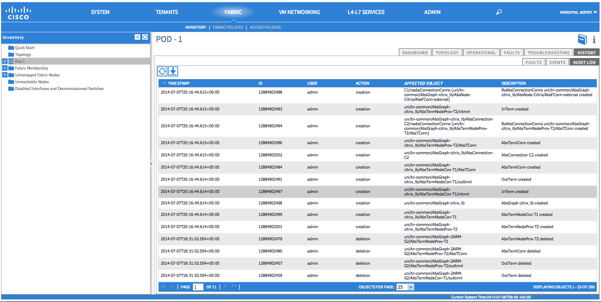

APIC Process Crash Troubleshooting¶
Overview¶
The APIC has a series of Data Management Engine (DME) processes which control various functional aspects on the system. When the system has a software failure in a particular process, a core file will be generated and the process will be reloaded.
This chapter covers potential issues involving system processes crashes or software failures, beginning with an overview of the various system processes, how to detect that a process has cored, and what actions should be taken when this occurs. The displays taken on a working healthy system can then be used to identify processes that may have terminated abruptly.
DME Processes:¶
The essential processes running on an APIC can be found either through the GUI or the CLI. Using the GUI, the processes and the process ID running is found in System->Controllers->Processes as shown here:
{kind=link}
Using the CLI, the processes and the process ID are found in the summary file at /aci/system/controllers/1/processes (for APIC1):
admin@RTP_Apic1:processes> cat summary
processes:
process-id process-name max-memory-allocated state
---------- ----------------- -------------------- -------------------
0 KERNEL 0 interruptible-sleep
331 dhcpd 108920832 interruptible-sleep
336 vmmmgr 334442496 interruptible-sleep
554 neo 398274560 interruptible-sleep
1034 ae 153690112 interruptible-sleep
1214 eventmgr 514793472 interruptible-sleep
2541 bootmgr 292020224 interruptible-sleep
4390 snoopy 28499968 interruptible-sleep
5832 scripthandler 254308352 interruptible-sleep
19204 dbgr 648941568 interruptible-sleep
21863 nginx 4312199168 interruptible-sleep
32192 appliancedirector 136732672 interruptible-sleep
32197 sshd 1228800 interruptible-sleep
32202 perfwatch 19345408 interruptible-sleep
32203 observer 724484096 interruptible-sleep
32205 lldpad 1200128 interruptible-sleep
32209 topomgr 280576000 interruptible-sleep
32210 xinetd 99258368 interruptible-sleep
32213 policymgr 673251328 interruptible-sleep
32215 reader 258940928 interruptible-sleep
32216 logwatch 266596352 interruptible-sleep
32218 idmgr 246824960 interruptible-sleep
32416 keyhole 15233024 interruptible-sleep
admin@apic1:processes>
Each of the processes running on the APIC writes to a log file on the system. These log files can be bundled as part of the APIC techsupport file but can also be observed through SSH shell access in /var/log/dme/log. For example, the Policy Manager process log output is written into /var/log/dme/log/svc_ifc_policymgr.bin.log.
The following is a brief description of the processes running on the system. This can help in understanding which log files to reference when troubleshooting a particular process or understand the impact to the system if a process crashed:
| Process | Function |
|---|---|
| KERNEL | Linux kernel |
| dhcpd | DHCP process running for APIC to assign infra addresses |
| vmmmgr | Handles process between APIC and Hypervisors |
| neo | Shell CLI Interpreter |
| ae | Handles the state and inventory of local APIC appliance |
| eventmgr | Handles all events and faults on the system |
| bootmgr | Controls boot and firmware updates on fabric nodes |
| snoopy | Shell CLI help, tab command completion |
| scripthandler | Handles the L4-L7 device scripts and communication |
| dbgr Generates | core files when process crashes |
| nginx | Web service handling GUI and REST API access |
| appliancedirector | Handles formation and control of APIC cluster |
| sshd | Enabled SSH access into the APIC |
| perfwatch | Monitors Linux cgroup resource usage |
| observer | Monitors the fabric system and data handling of state, stats, health |
| lldpad | LLDP Agent |
| topomgr | Maintains fabric topology and inventory |
How to Identify When a Process Crashes:¶
When a process crashes and a core file is generated, the ACI system raises a fault notification and generates an entry in the event logs. The fault for the particular process is shown as a “process-crash” as shown in this syslog output from the APIC:
Oct 15 17:13:35 apic1 %LOG_LOCAL7-3-SYSTEM_MSG [E4208395][process-crash][major][subj-[dbgs/cores/ctrlr-1-svc-reader-ts-2014-10-15T17:13:28.000+00:00]/rec-4294972278]Process reader cored
The fault that is generated when the process crashes is cleared when the process is restarted. The fault can be viewed via the GUI in the fabric HISTORY-> EVENTS tab at FABRIC->INVENTORY->Pod 1:
{kind=link}
Collecting the Core Files:¶
The APIC GUI provides a central location to collect the core files for APICS and nodes in the fabric.
An export policy can be created from ADMIN -> IMPORT/EXPORT in Export Policies -> Core. However, there is a default core policy where files can be downloaded directly. As shown in this example in the OPERATIONAL tab:
{kind=link}
The core files can be accessed via SSH/SCP on the APIC at /data/techsupport.
Note that the core file will be available at /data/techsupport for the APIC that had the process crash. Which APIC that the core file resides can be found by the Export Location path as shown in the GUI. For example, if the Export Location begins with “files/2/”, the file is located on node 2 (APIC2).
Problem Description¶
APIC process crashes and either restarts automatically or is not running.
Verification¶
A process that crashes generally should restart. However, if the same process crashes several times in a short amount of time, the process may not recover.
Verify the process status through:
APIC CLI: Verify the contents of the summary file on the APIC located in /aci/system/controllers/<APIC node ID>/processes. For example /aci/system/controllers/1/processes/summary for APIC1. An example output was shown in the above overview section.
GUI by navigating to SYSTEM->CONTROLLERS->Controllers and the APIC and check that the processes running have a PID associated. All but KERNEL should. An example output was shown in the above overview section.
Check the appropriate process log:¶
The process which is not running should have at some level of log output prior to the crash. The output of the logs for that APIC that the process is not running is found in /var/log/dme/log via SSH access. The process name will be part of the file name. For example vmmmgr is svc_ifc_vmmmgr.bin.log.
admin@RTP_Apic1:log> ls -l |grep vmmmgr
-rw-r--r-- 2 ifc root 18529370 Oct 15 14:38 svc_ifc_vmmmgr.bin.log
-rw-r--r-- 1 ifc root 1318921 Oct 14 19:25 svc_ifc_vmmmgr.bin.log.1.gz
-rw-r--r-- 1 ifc root 967890 Oct 14 19:42 svc_ifc_vmmmgr.bin.log.2.gz
-rw-r--r-- 1 ifc root 1555562 Oct 14 22:11 svc_ifc_vmmmgr.bin.log.3.gz
-rw-r--r-- 1 ifc root 1673143 Oct 15 12:19 svc_ifc_vmmmgr.bin.log.4.gz
-rw-r--r-- 1 ifc root 1119380 Oct 15 12:30 svc_ifc_vmmmgr.bin.log.5.gz
-rw-r--r-- 2 ifc root 18529370 Oct 15 14:38 svc_ifc_vmmmgr.bin.log.6
-rw-r--r-- 1 ifc root 2 Oct 14 13:36 svc_ifc_vmmmgr.bin.log.PRESERVED
-rw-r--r-- 1 ifc root 7924 Oct 14 22:44 svc_ifc_vmmmgr.bin.log.stderr
admin@RTP_Apic1:log>
There will be several files for each process located at /var/log/dme/log. As the log file increases in size, it will be compressed and older log files will be rotated off. Check the core file creation time (as shown in the GUI and the core file name) to understand where to look in the file. Also, when the process first attempts to come up, there exists an entry in the log file that indicates “Process is restarting after a crash” that can be used to search backwards as to what might have happened prior to the crash.
Check what activity occurred at the time of the process crash¶
Typically, a process which has been running successfully would have to experience some change which caused it to crash. In many cases the changes may have been some configuration activity on the system. What activity occurred on the system can be found in the audit log history of the system.
For example, if the policymgr process crashes several times that led to the process not being up, going into the logs and inspecting entries around the time of the first crash is a good way to investigate what might have caused the issue. As shown in the example below, there was a change where a new service graph was added, thus giving the indication that the service graph configuration may have caused the failure:
{kind=link}
Restarting a process:¶
When a process fails to restart automatically on an APIC, the recommended method is to restart the APIC to allow all the processes to come up organically.
The processes can be started as well through the APIC shell command acidiag restart mgmt. This will restart the essential APIC processes but it will cause all processes to restart, not just bringing up the process which is not running.
Now, if the process has crashed several times already, the process may crash again when it comes up. This could be to some persistent condition of configuration that is leading to the crash. Knowing what changed as indicated above may help to know what corrective actions to take to correct the root issue.
Collect Techsupport and Core File and Contact the Cisco TAC:¶
Process crashes should not occur under normal operational conditions. In order to understand better why the process crashed beyond the above steps it will be necessary to decode the core files. At this point, the files will need to be collected and provided to Cisco Technical Assistance Center for further processing.
Collect the core files, as indicated above in the overview section, and open up a support case with the Cisco Technical Assistance Center.
Verification¶
A process that crashes generally should restart. When the process crashes, a core file will be generated as indicated in the overview section.
Check the appropriate process log:¶
The process which crashes should have at some level of log output prior to the crash. The output of the logs for that APIC that the process is not running is found in /var/log/dme/log when logged in via SSH access. The process name will be part of the file name. For example vmmmgr is svc_ifc_vmmmgr.bin.log.
admin@RTP_Apic1:log> ls -l |grep vmmmgr
-rw-r--r-- 2 ifc root 18529370 Oct 15 14:38 svc_ifc_vmmmgr.bin.log
-rw-r--r-- 1 ifc root 1318921 Oct 14 19:25 svc_ifc_vmmmgr.bin.log.1.gz
-rw-r--r-- 1 ifc root 967890 Oct 14 19:42 svc_ifc_vmmmgr.bin.log.2.gz
-rw-r--r-- 1 ifc root 1555562 Oct 14 22:11 svc_ifc_vmmmgr.bin.log.3.gz
-rw-r--r-- 1 ifc root 1673143 Oct 15 12:19 svc_ifc_vmmmgr.bin.log.4.gz
-rw-r--r-- 1 ifc root 1119380 Oct 15 12:30 svc_ifc_vmmmgr.bin.log.5.gz
-rw-r--r-- 2 ifc root 18529370 Oct 15 14:38 svc_ifc_vmmmgr.bin.log.6
-rw-r--r-- 1 ifc root 2 Oct 14 13:36 svc_ifc_vmmmgr.bin.log.PRESERVED
-rw-r--r-- 1 ifc root 7924 Oct 14 22:44 svc_ifc_vmmmgr.bin.log.stderr
admin@RTP_Apic1:log>
There will be several files for each process located at /var/log/dme/log. As the log file increases in size, it will be compressed and older log files will be rotated off. Check the core file creation time (as shown in the GUI and the core file name) to understand where to look in the file. Also, when the process first attempts to come up, there be an entry in the log file that indicates “Process is restarting after a crash” that can be used to search backwards as to what might have happened prior to the crash.
Check what activity occurred at the time of the process crash:¶
Typically, a process which has been running successfully would have to experience some change which caused it to crash. In many cases the changes may have been some configuration activity on the system. What activity occurred on the system can be found in FABRIC->Pod 1 in the HISTORY tab and then the AUDIT LOG subtab.
In this example, the policymgr process crashed several times leading to the process not being up. On further investigation, during the time of the first crash event, a new service graph was added.
Collect Techsupport and Core File and Contact the Cisco TAC:¶
Process crashes should not occur under normal operational conditions. In order to understand better why the process crashed beyond the above steps it will be necessary to decode the core files. At this point, the files will need to be collected and provided to Cisco Technical Assistance Center for further processing.
Collect the core files, as indicated above in the overview section, and open up a support case with the Cisco Technical Assistance Center.